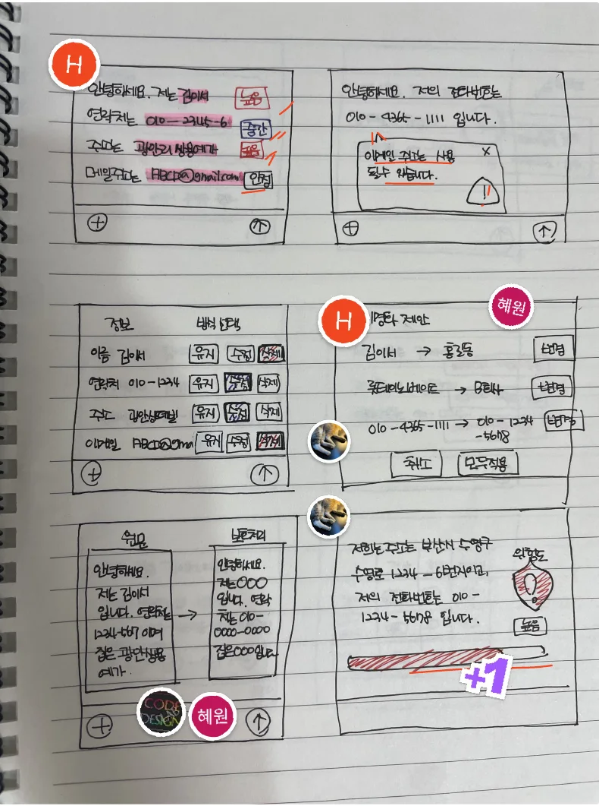
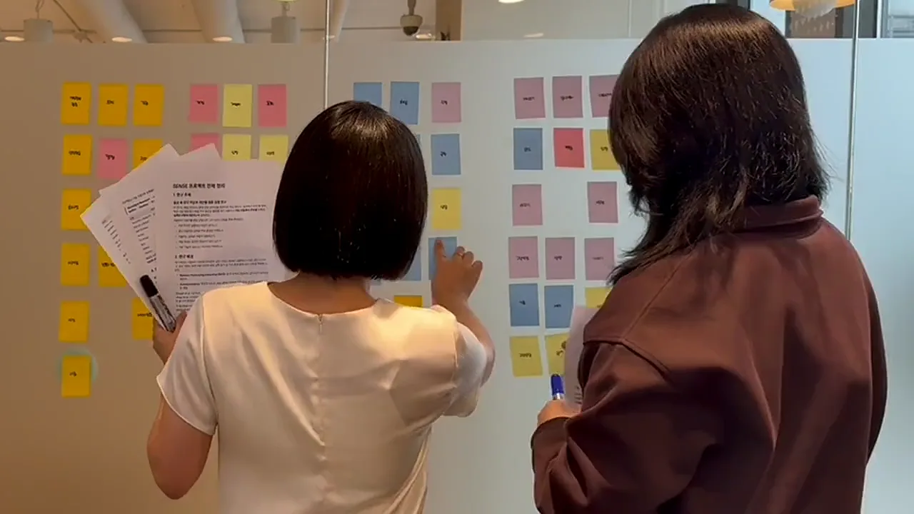
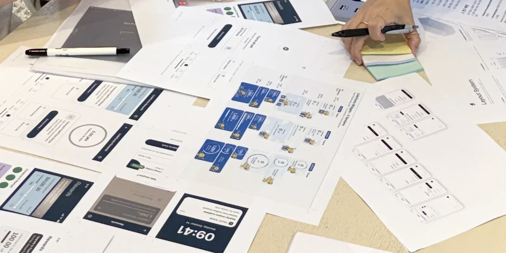
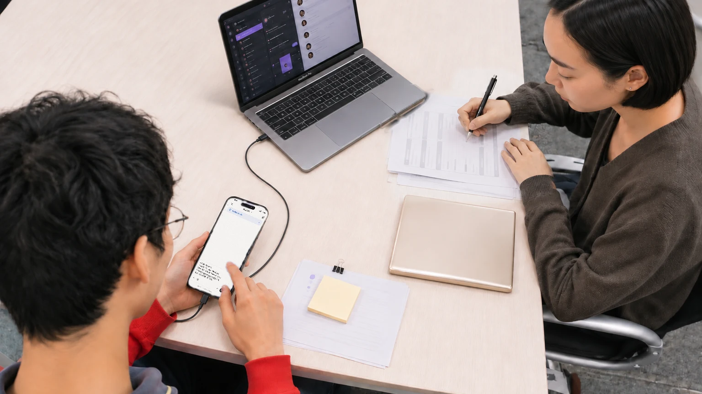

사용자의 멈춘 순간을 다시 잇는 김이서.
화면을 그리기 전에 먼저 사람들의 이야기를 듣고, 사용자가 어디서 멈추는지 찾는 UI/UX 디자이너예요.
그렇게 찾은 멈춘 순간을 다시 지나갈 수 있는 화면으로 이어요. 사용자가 끝까지 갈 수 있도록요.

Who I am
어릴 때 포토샵으로 놀던 아이가, 그대로 디자인 한 길을 걸어왔어요.
화면을 그리기 전에 먼저 사람들의 이야기를 들어요.
인터뷰를 포스트잇 916장으로 쪼개서, 사용자가 멈추는 곳을 찾아요.
친구들 피셜 꼼꼼한 완벽주의, 시안은 여러 개 펼쳐 놓고 골라요.
쉴 땐 카페 · 산책 · 여행으로 채워요.
김이서 · 멈춘 순간을 잇는 과정



How I work
01 · 듣기화면을 그리기 전에, 인터뷰로 이야기를 먼저 들어요.
02 · 쪼개기들은 이야기를 포스트잇 916장으로 쪼개고 다시 묶어요.
03 · 찾기그 안에서 사용자가 멈추는 순간 하나를 찾아요.
04 · 잇기그 순간을 다시 지나갈 수 있는 화면으로 이어요.
0장[1]
인터뷰를 쪼갠 포스트잇
0명[1]
직접 이야기를 들은 사람
0개[1]
그렇게 찾아낸 멈춘 순간
- [1] 디자인 프로젝트 리서치 기준 — 인터뷰를 포스트잇으로 쪼개 다시 묶은 과정
멈춘 순간은 기다려 주지 않아요.
그래서 지금 이어요.
리서치에서 찾은 멈춘 순간을, 스케치로 풀고, 시안을 여러 개 펼쳐 비교한 다음, 프로토타입으로 직접 눌러 보며 확인해요.
01 · 리서치
02 · 스케치
03 · 시안
04 · 프로토타입
What I do
사용자의 이야기를 듣는 것부터, 눌러 볼 수 있는 화면을 만드는 것까지.